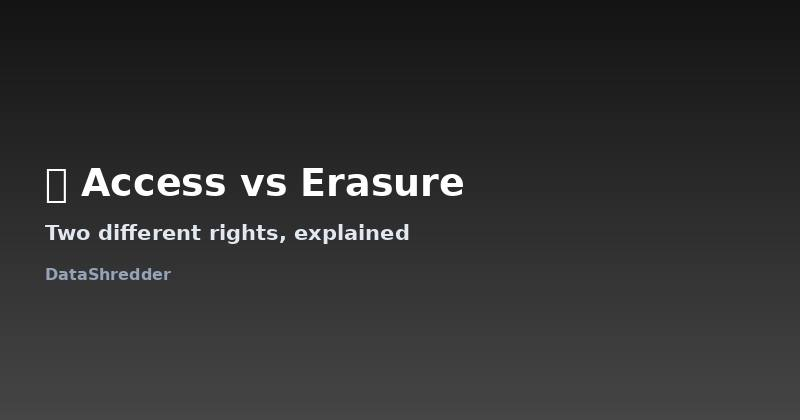

Right of Access vs. Right to Erasure: What's the Difference?
Updated August 2026 · 6 min read

Why these get mixed up
"I want to know what they have on me" and "I want them to get rid of it" sound like the same request, but they're two separate legal rights with different processes, different deadlines in some jurisdictions, and different outcomes. Sending the wrong one means you either get a huge data export when you wanted deletion, or a confirmation of deletion when you actually wanted to review what they had first.
The right of access, explained
Under GDPR Article 15 (and CCPA's similar right to know), you can ask a company to confirm whether they're processing your data and, if so, give you a copy of it along with details like where it came from and who they've shared it with. This is the right to use if you want to see your file before deciding what to do next — it doesn't remove anything, it just makes it visible.
The right to erasure, explained
This is the right most people mean when they say "delete my data" — it asks the company to permanently remove your personal information, subject to the legal exceptions covered elsewhere on this site (tax records, ongoing legal claims, and similar obligations). It's a stronger, more final request, and companies scrutinize it more closely than an access request.
Which one you actually want
| Situation | Right to use |
|---|---|
| You want to know what a company has before deciding anything | Right of access |
| You already know you want it gone | Right to erasure |
| You suspect a data breach involved your info | Access first, then erasure if warranted |
A common, effective approach: request access first if you're unsure what a company holds, review what comes back, then follow up with a scoped erasure request for the parts you actually want gone. Our generator currently focuses on erasure requests, since that's what most people are looking for once they've decided to act.
Frequently Asked Questions
Do these two rights have the same response deadline?
Under GDPR, both are subject to the same one-month deadline (extendable to three for complex cases). CCPA's timelines are similarly aligned between the two rights.
Can I request both at the same time?
Yes, though it's generally more effective to request access first, review the response, then send a targeted erasure request rather than combining them into one vague ask.
Is there a fee for either request?
Both are typically free for a first request; a reasonable fee can only apply if your requests become repetitive or excessive.